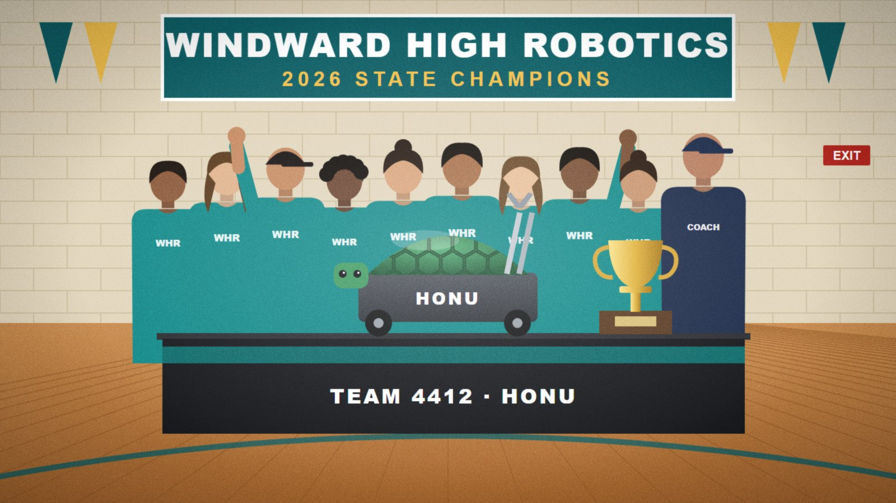

Schools
Windward High robotics team takes state title
A summer of late nights pays off for twelve students and their coach.

The Windward High School robotics team won the state championship on Saturday, beating 22 other schools with a robot that stacks cargo blocks faster than any other entry in the competition's history.
"They rebuilt the arm four times over the summer," said coach Alison Lee. "The fourth one worked."
Team captain Kaʻiulani Park said the win came down to practice. "We ran the course probably 300 times. By the end we could do it with our eyes closed. We did not do it with our eyes closed."
The team will represent the state at the national competition in April. A community fundraiser for travel costs is planned for October at the school cafeteria.
Reader comments (0)